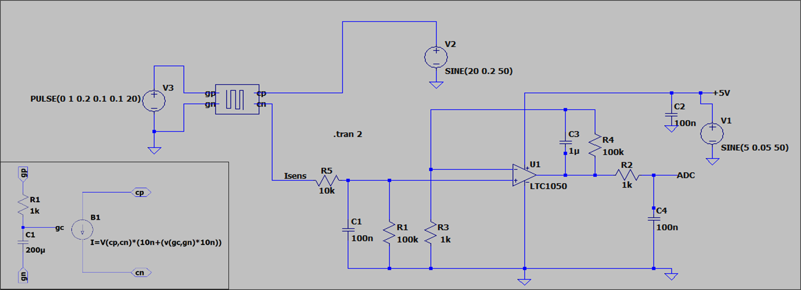
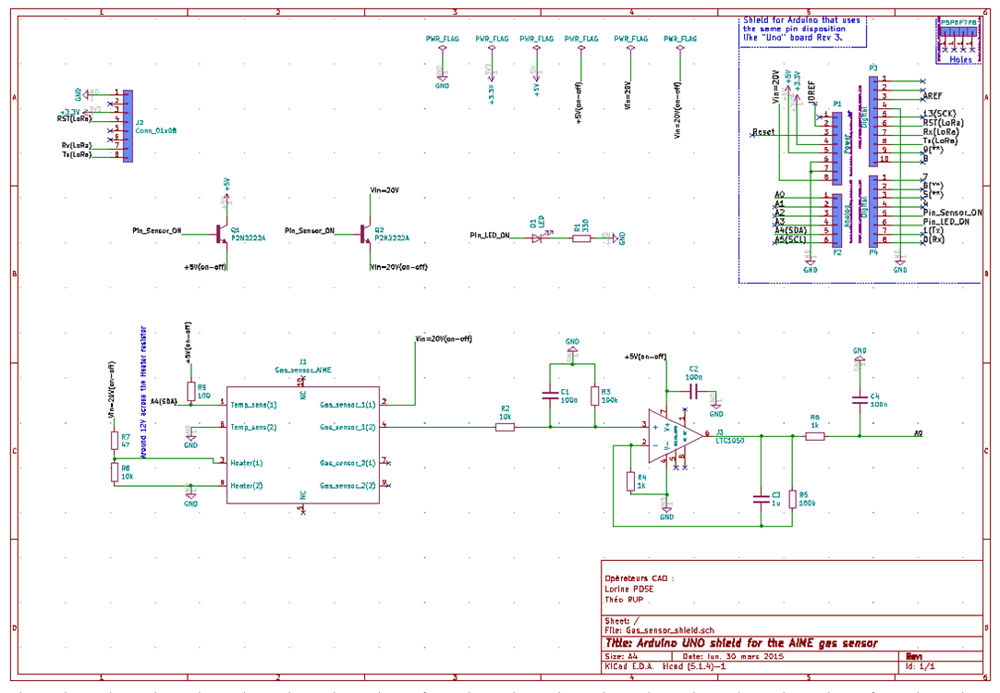
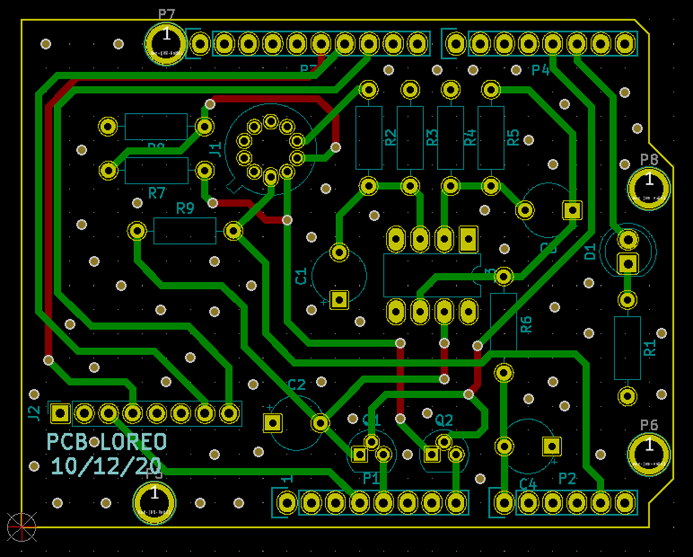
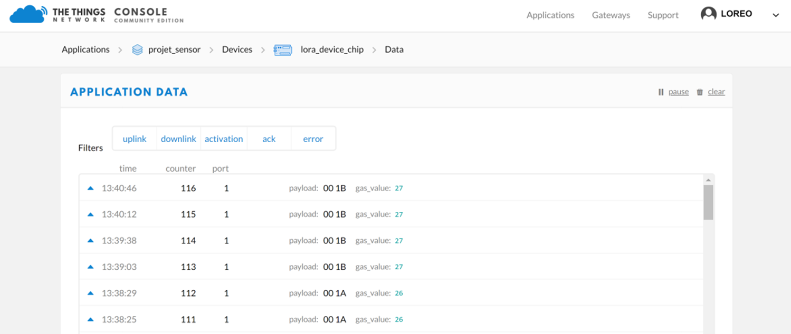
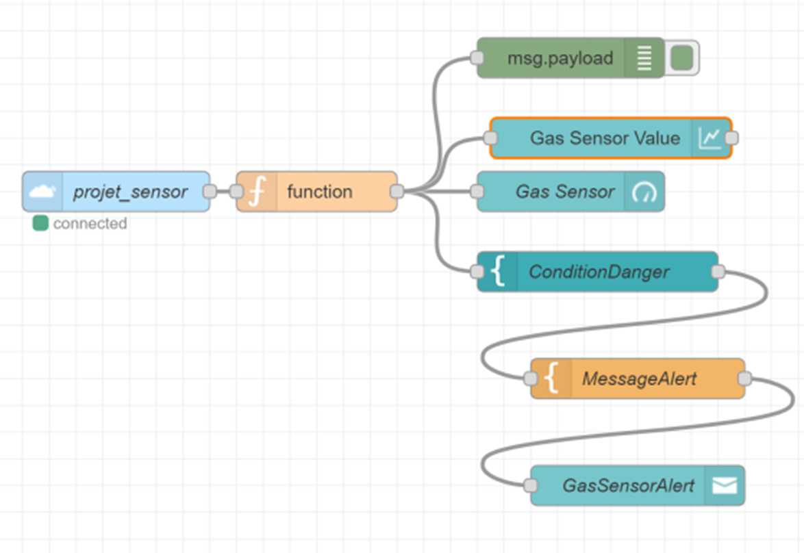
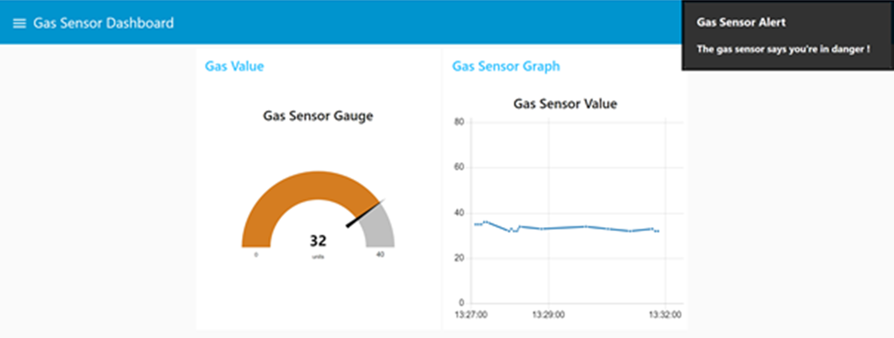

-
Context and description
A smart device is a context-aware electronic device capable of performing autonomous computing and connecting to other devices wire or wirelessly for data exchange. Its implementation involves multiple areas such as the software and hardware development or the physics involved in the different sensors present in the device.
In this project, we developed a smart device based on a nano particle gas sensor we created. First, we associated an electronic circuit to it, including a conditioner that amplified the signal in order for it to be exploitable later. Then we implemented the circuit on a Printed Circuit Board (PCB) based on an Arduino Uno shield. Coding on an Arduino, we implemented the behaviour of the device, sending the data, retrieved from the gas sensor, periodically to a TTN (The Things Network) gateway through a module LoRa. Finally, we developed a Human-Machine interface in order to make or smart device user friendly.
Technical Aspects
-
Conception of the electronic circuit
Once we have our gas sensor, we want to be able to exploit its data. In our case, we have a passive sensor. It detects and responds to some type of input from the physical environment, here, it is the variation of certain gas present in the environment, that will induce a variation of the resistance of the layer containing the nano particles. To measure this, we amplified and filter the signal thanks to an amplifier and a shunt resistor. We chose the LTC1050 amplifier because of its small input current and a really low voltage offset. To this, we added three low pass filters with cut of frequencies of 16Hz, 1,6Hz and 1,6kHz.
A minimalist solution with only one amplifier and a shunt resistor. However, we must choose an amplifier with a small input current (really smaller that the current delivered by the sensor) and an ultra-low voltage offset. For that, we have elected the LTC1050 amplifier.
We modelized this circuit on LTSpice in which we confirmed the behaviour of the circuit by simulating the gas sensor with a first order low-pass filter in its transitional state. This circuit will induce an output variation between 2v and 4V for an input variation of the sensor between 200nA and 400nA.Figure 1: Modelling of the electronic circuit attached to the gas sensor
-
Development of the Printed Circuit Board through KiCAD
Once our sensor is ready-to-use, we developed a Printed Circuit Board (PCB). A PCB, is used to mechanically support and electrically connect electronic components using conductive pathways, tracks or signal traces etched from copper sheets laminated onto a non-conductive substrate. It is commonly used in electronics because of its compact size and the saving of wires. It is more reliable, immune to movement and presents low electronic noise.
In order to implement our final circuit on the PCB using KiCad we follow two main steps:
- Schematic’s edition
In this phase, we simply reproduced the schematic of our circuit, associating to each element a footprint which is fundamental since the footprint will tell later the required space to allocate to each element in the shield. However, some elements are not already configured in KiCad such as our gas sensor or the LTC1050 amplifier, requiring to create additional libraries for each.Figure 2: Schematic of the electronic circuit on KiCad
- PCB design and routing
Once the schematic if finalised, each element must be placed on the printed board. Here we directly load a shield template compatible with Arduino Uno, which we will use later to process the data. The elements and the routes that link them have been carefully chosen following several rules. The length of the lines was minimized, the routes were implemented on the bottom layer except when dealing with crossing components, the angles between the routes were preferably obtuse and the card was drilled to harmonize the ground plane.Figure 3: Printed Circuit Board design

Figure 4: 3D view of the PCB design
-
Software development of the device
When developing this part, we did not have yet the gas sensor so we used an industrial one. The objective was to send periodically the data retrieved from the sensor to a The Things Network gateway, an open source LoRaWAN network server stack for IoT. For that we used an Arduino Uno combined with a LoRa chip: RN2483. First, we had to configure the gateway by adding our device with the characteristics of our LoRa module. From there, we could send the information directly to the gateway.
Figure 5: View of the TTN gateway receiving the gas senor values
Once the application is functional, we focused on the energy consumption which is one of the main challenges of IoT and smart devices. In our case, it was not relevant to send data continuously, therefore the application sent the information every ten minutes. This way, we could put to sleep both the LoRa module and the gas sensor by switching off its supply. To do that, we used NPN transistors controlled by digital outputs of the Arduino Uno. Thanks to a USB power measurement we could analyse the improvement of power consumption of our system, obtaining the following results:
Current Voltage Power Normal Mode 5,12V 0,26A 1,33W Saving Mode 5,12V 0,06 0,3
The energy consumption saved is high since when not sending any information, the energy consumption is down by 80%.
-
Human Machine interface of the application with NodeRED
In this part, we developed a Human-Machine interface with NodeRED. Node-RED is a programming tool for wiring together hardware devices, APIs and online services. With the “The Things Network” palette we were able to retrieve the data posted by the Arduino on the TTN gateway, and to display it to make it user friendly. We also implemented the appearance of a popup when the gas value exceeds a defined value as shown in Figure 7.
Figure 6: NodeRED implementation of the HMI
Figure 7: Dashboard of the gas sensor application
Difficulties and skills mobilized
During this project, the main challenge was to use KiCad to implement a PCB which is something I had never done before. Luckily, my partner in the project had experience with it thanks to a previous internship, which made this part that much easier. This project mobilized a lot of different skills which is great, as is the idea to create a device from start to finish. Nonetheless, the time dedicated to each task was not sufficient.
Thanks to this class, I have improved my knowledge when it comes to electronic conditioners and the use of LTSpice. I learned the different steps to create a PCB with KiCad. Finally, this gave me the opportunity to practice and confirm my skills in C programming and NodeRED.Conditioner in electronic devices: LTSpicePCB implementation: KiCadC programming and NodeREDAnalytical Aspects
Levels :
- AP: level of application: follow-up of instructions or procedures
- AN: level of analysis: improvement or optimization of solutions or proposals
- M: level of proficiency: program design or specification definitions
- EX: level of expertise: definition of orientations or strategies
Skills Experience Mode Level Understand microcontroller archictecture and how to use them During my studies, I had multiple opportunities to use different microcontrollers such as ESP32 chip micorcontrollers. I learned how to use them, how they work, their architecture,… IT,ST EX Be able to design data acquisition system (sensor, conditioner, microcontroller) with respect to the application During my studies, I participated in several project, such as the one with our gas sensor, where I had to design a data aquisition system, retrieving data from sensors, adaping the siignal to my needs and using it through a microcontroller to answer an applciation's need, for instance activating actuators depending on the data retrieved from the sensors. IT,ST,PE EX Be able to design the electronic circuit of a sensor’s signal conditioner (design + simulation) During this project, I designed an electronic circuit that embedded the gas sensor that we build previously (Nano gas sensor manufacture). The circuit allowed to amplify the signal in order for the signal to be usable later on. To ckeck that the circuit would be answering the requisites I simulated it using LTSpice. IT,PE EX Be able to design a shield to accommodate the gas sensor During the labs, I interacted with the architecture I deployed using Postman, but also nodeRed. At some point, in another course I also used REST services through eclipse with java to interact with om2m (Service Oriented Architecture). IT,ST EX Be abe to design the sofware to use the gas sensor and its HMI I designed a software to use the data retrieved from the electronic circuit which process the data and act on it (sends the data to a gateway through a LoRa module for instance). I also used Node-Red to represent the data through a Human Machine Interface(HMI) for it to be user friendly. IT,ST EX Be able to combine all of the above mentioned components into a smart device Even though the PCB was not printed I combined all parts that could be combined and tested them. I build a smart device from scratch, going from the creation of the sensor, to the implementation of the software, the HMI and the hardware process. IT,ST,PE EX